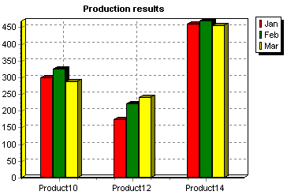

|
Series Type |
No. of variables |
Datasource Properties |
| |
|
|
|
Basic |
|
|
|
Line |
2 |
XValues, YValues, XLabel |
|
Fast Line |
2 |
XValues, YValues, XLabel |
|
Bar |
2 |
XValues, YValues (called Bar), XLabel |
|
HorizBar |
2 |
XValues, YValues (called Bar), XLabel |
|
Area |
2 |
XValues, YValues, XLabel |
|
Point |
2 |
Xvalues, YValues, XLabel |
|
Pie |
1 |
PieValues, XLabel |
|
Arrow |
4 |
StartXValues, StartYValues, XLabel, EndXValues, EndYValues |
|
Bubble |
3 |
Xvalues, YValues, XLabel, RadiusValues |
|
Gantt |
3 |
StartValues, EndValues, AY (Y axis level), AXLabel (Label optionally shown on Y-axis or as mark) |
|
|
4 |
X0 (Top), Y0 (Bottom), X1 (Left), Y1 (Right) |
|
|
Extended |
|
|
|
Bezier |
2 |
XValues, YValues, XLabel |
|
Candle |
5 |
OpenValues, CloseValues, HighValues, LowValues, DateValues |
|
Contour |
3 |
XValues, YValues, XLabel, ZValues |
|
|
3 |
XValues, YValues, XLabel, ErrorValues |
|
|
Point3D |
3 |
XValues, YValues, XLabel, ZValues |
|
Polar |
2 |
XValues, YValues, Labels (Polar has Angle and Radius) |
|
Radar |
2 |
XValues, YValues, Labels (Radar has Angle and Radius) |
|
3D Surface |
3 |
XValues, YValues, ZValues |
|
Volume |
2 |
XValues, YValues (VolumeValues), XLabel |
Labelling can be used to extend the value of a 2 variable Series Type. See the example below that uses 3 instances of the Bar Series type in the same Chart.
Example
Uses Bar Series types
| Product code | Month | Quantity produced |
| 10 | Jan | 300 |
| 10 | Feb | 325 |
| 10 | Mar | 287 |
| 12 | Jan | 175 |
| 12 | Feb | 223 |
| 12 | Mar | 241 |
| 14 | Jan | 461 |
| 14 | Feb | 470 |
| 14 | Mar | 455 |
In its simplest form, the data produces the following Chart, grouping the information by month:

or (grouping by product):

We have added new values to the table above (Stock).
| Product code | Month | Quantity produced | Stock level |
| 10 | Jan | 300 | 600 |
| 10 | Feb | 325 | 715 |
| 10 | Mar | 287 | 676 |
| 12 | Jan | 175 | 245 |
| 12 | Feb | 223 | 270 |
| 12 | Mar | 241 | 315 |
| 14 | Jan | 461 | 800 |
| 14 | Feb | 470 | 755 |
| 14 | Mar | 455 | 835 |
The values of stock are generally higher than those of monthly production so displaying them gives the following chart (2D this time). The Chart uses Line Series to differentiate Stocks.

Most Series types (other than Functions Tutorial 7) use the add methods for adding data. Please note that
there are many overloads to accept differing
data formats and that some series types accept more variables in function of the number of variables (valuelists) that the Series contains.
Most Series accept labels and colours as variable. Eg. add(double x, double y, String text, Color color));
For example:
- series.add() will add a null (no) value
- series.add(y) will add a y value with an incremented sequential x value (0,1,2,3 .. etc)
- series.add(x,y) will add your chosen x and y values
- series.add(x[],y[]) will add your x and y arrays
- series.add(x,y,z) three dimensional series accept three variables
- series.add(x, y, radius, text, color) ..an example of a slight variation would be the Bubble series that accepts radius values
Colour
Colour may be manually added for a point when adding the point.
Example
tChart1.addSeries(new Bar());
tChart1.getSeries(0).add(50,"oranges", Color.Orange);
Alternatively, you can allow TeeChart to allocate a colour. TeeChart will
choose one of up to 19 unique and as yet unused colours for each new Series, or
for each new Series point if ColorEach is set to true.
Example
Random rnd = new Random();
tChart1.getSeries(0).setColorEach(true);
for(int i = 0; i < 19; ++i) {
int higher = i + 65;
tChart1.getSeries(0).add(rnd.nextInt(100));
}
}
Use Series.Delete to delete a point from a Series.
Example
tChart1.getSeries(0).delete(7);
//(8th point - Points index start at zero)
Series.Clear clears all points from a Series.
See the table Adding data to a Series for a list of Series Types that support the Add method.
Adding a null will add a null point to the Series allowing you to define a label for the point but leaving a
break in the Series at that point. In the case of a Line Series, the last point before the break will not join to the first point after the break.
example
Line line = new Line();
line.add(); //adds null
line.add("myLabel"); //adds null with label
The Series' defaultNullValue property defines what to use as null. As default it is set to 0 which may not be the best ideal for your dataset, you can use any double value you prefer, including Double.Nan;
Add null maintains a place in the Series' valuelist but uses transparent colour to represent the data point.
TeeChart Pro offers an empty Chart Canvas as a backdrop to data Series. That means that no Chart types are predefined. You define the Chart type you require as a mix of the Series Types that you wish to display. Due to the specialised nature of some Series types it is impractical to mix a few
of the Series types together on a Chart. TeeChart helps you by greying out unsuitable Series types in the Chart Gallery when you arrive to add a new Series. There is no practical limit to the number of Series that you can put in one Chart.
Add a Series using the Chart Editor (see Tutorial 1) or by code.
Example
public void jButton1_actionPerformed(ActionEvent e) {
Bar bar1 = new Bar(tChart1.getChart().chart);
bar1.fillSampleValues(10);
}
};
Series added to the Chart will automatically take the Left and Bottom axes as their reference axes. You may change the reference axes in the Chart Editor by selecting the Series General page for the relevant Series. There are 4 axes available, Top, Left, Bottom and Right. By code, changing the axes will look like this:
bar1.setHorizontalAxis(HorizontalAxis.TOP);
bar1.setVerticalAxis(VerticalAxis.RIGHT);
More than 1 Series may be associated with each Axis. TeeChart will decide the best scale to fit the Series matched to the Axis but you may change Axis scales yourself (See the Axis Tutorial). Additional axes may be added, they will copy the scales associated with their counterparts from the first 4 axes (see the Tutorial section Additional axes).
You may use a Series as the datasource for another Series. This can be done with the Chart Editor by setting the datasource for the 2nd Series. Go to the Series tab, Datasource page. Select 'Function' as the datasource type. Two Listboxes will appear, available Series and Selected Series. Select the Series you wish to use as the datasource for the present Series, then, in the Combobox above, entitled Function:, select Copy as the function type. Note that any Series, in this way, may be defined as a function of other Series and the Function Type may be any
in the list available in the Function combobox. To do the same by code see below:
public void bFuncion_actionPerformed(ActionEvent e) {
Bar bar1 = new Bar();
bar1.fillSampleValues();
Line line1 = new Line();
com.steema.teechart.functions.Average average1 = new com.steema.teechart.functions.Average();
line1.setFunction(average1);
line1.setDataSource(bar1);
line1.checkDataSource();
}
See tutorial 7 - Working with Functions for more information about how to use TeeChart functions.
Changing series order is very easy with the Chart Editor. Go to the front page of the Editor and highlight the Series that you wish to move. Use the arrow buttons on the right to move the Series up or down in the Series order. Series order will decide the relative display position of the Series in the Chart with respect to other Series. By code use the SeriesList property or the ExchangeSeries method.
Example
tChart1.exchangeSeries(0,1); //Change Series(0) with Series(1) in the index order
*Note. After exchanging Series, the index for the Series will be changed. Thus the line of code above will perpetually interchange the 2 Series '0' and '1' if the code is rerun, as 0 becomes 1 and 1 becomes 0.
Setting a Series to 'Active:=False' will hide the Series from the Chart but maintain its data content intact.
TeeChart Series store their values in a Valuelist accessible and modifiable via the TChartValueList component.
This code modifies the value of a BarSeries Bar according to the user's mouseclick.
Example
upDatePoint(valueIndex,tChart1.getAxes().getLeft().calcPosPoint(e.Y));
Call the UpdatePoint Sub routine to modify the Bar's value:
private void upDatePoint(int Bar, double Y)
{
if(Bar < tChart1.getSeries(0).getCount())
{
tChart1.getSeries(0).getYValues().setValue(Bar,Y);
tChart1.paint(tChart1.getGraphics());
}
}
The previous section introduces some use of Series events. This section shows
some additional uses.
OnGetSeriesPointerStyle
For those Series that use the TChart Pointer, you may access and modify the
Pointer using the OnGetSeriesPointer event:
Drawing an Uptriangle if the Point is higher than the last, DownTriangle if
lower, etc.
if(e.ValueIndex > 0) {
if(line1.getYValues().getValue(e.ValueIndex) >
line1.getYValues().getValue(e.ValueIndex - 1)) {
e.Style = PointerStyles.TRIANGLE;
}
else if(line1.getYValues().getValue(e.ValueIndex) <
line1.getYValues().getValue(e.ValueIndex - 1)) {
e.Style = PointerStyles.DOWNTRIANGLE;
}
else {
e.Style = PointerStyles.DIAMOND;
}
}
else {
e.Style = PointerStyles.DIAMOND;
}
OnGetSeriesMark
Use the OnGetSeriesMark event to modify the Mark contents at runtime. The
following code varies the MarkText according to the value relative to the last;
TeeChart supports the dragging of Marks in cases of overlapping via the
DragMarks Tool:
if(e.ValueIndex > 0) {
if(line1.getYValues().getValue(e.ValueIndex) >
line1.getYValues().getValue(e.ValueIndex - 1)) {
e.MarkText = e.MarkText + " (Up)";
}
else if(line1.getYValues().getValue(e.ValueIndex) <
line1.getYValues().getValue(e.ValueIndex - 1)) {
e.MarkText = e.MarkText + " (Down)";
}
else {
e.MarkText = e.MarkText + " (No Change)";
}
}
}
The Chart appearance resulting from the last 2 events is:
© 1996-2018 Steema Software SL. All rights reserved.